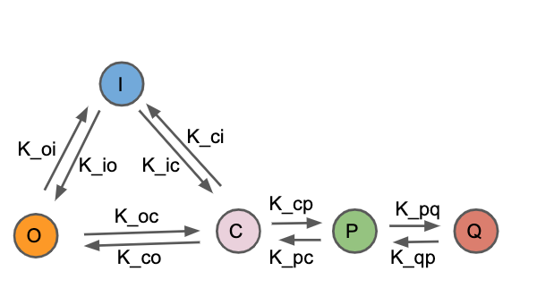

Eigen Value Method
import numpy as np from scipy.integrate import odeint import matplotlib.pyplot as plt import seaborn as sns sns.set()

Five State Markov Model
$${\frac{dO(t)}{dt} = k_{io}I(t) + k_{co}C(t) - (k_{oi} + k_{oc})O(t)}$$
$${\frac{dC(t)}{dt} = k_{oc}O(t) + k_{ic}I(t) + k_{pc}P(t) - (k_{co} + k_{ci} + k_{cp})C(t)}$$
$${\frac{dI(t)}{dt} = k_{oi}O(t) + k_{ci}C(t) - (k_{io} + k_{ic})I(t)}$$
$${\frac{dP(t)}{dt} = k_{cp}C(t) + k_{qp}Q(t) - (k_{pc} + k_{pq})P(t)}$$
$${\frac{dQ(t)}{dt} = k_{pq}P(t) - k_{qp}Q(t)}$$
Using $${Q = 1 - I - C - O - P}$$
for equilibrium
$${k_{io}I(t) + k_{co}C(t) - (k_{oi} + k_{oc})O(t) = 0}$$
$${k_{oc}O(t) + k_{ic}I(t) + k_{pc}P(t) - (k_{co} + k_{ci} + k_{cp})C(t) = 0}$$
$${k_{oi}O(t) + k_{ci}C(t) - (k_{io} + k_{ic})I(t) = 0}$$
$${ (k_{qp} - k_{cp})C(t) + (k_{pc} + k_{pq} + k_{qp})P(t) + k_{qp}I(t) + k_{qp}O(t) = k_{qp}}$$
Algeraic Solution
$$\left( \begin{array}{cccc}
-(k_{oi} + k_{oc}) & k_{co} & k_{io} & 0\cr
k_{oc} & - (k_{co} + k_{ci} + k_{cp}) & k_{ic} & k_{pc}\cr
k_{oi} & k_{ci} & - (k_{io} + k_{ic}) & 0\cr
k_{qp} & (k_{qp} - k_{cp}) & k_{qp} & (k_{pc} + k_{pq} + k_{qp})\cr
\end{array} \right)
\left( \begin{array}{c}
O\cr
C\cr
I\cr
P\cr
\end{array} \right)
= \left( \begin{array}{c}
0\cr
0\cr
0\cr
k_{qp}\cr
\end{array} \right) $$
k = {"koi":0.32,\ "kio":0.24,\ "kco": 0.31,\ "koc": 0.12,\ "kic":0.34,\ "kci":0.23,\ "kcp": 0.37,\ "kpc":0.22,\ "kpq":0.31,\ "kqp":0.15}
A = np.array([[-(k['koi']+k['koc']), k['kco'], k['kio'],0], [k['koc'], -(k['kco']+k['kci']+k['kcp']), k['kic'],k['kpc']], [k['koi'], k['kci'], -(k['kio']+k['kic']),0], [k['kqp'], (k['kqp'] - k['kcp']), k['kqp'],(k['kpc']+k['kpq']+k['kqp'])]])
A
array([[-0.44, 0.31, 0.24, 0. ],
[ 0.12, -0.91, 0.34, 0.22],
[ 0.32, 0.23, -0.58, 0. ],
[ 0.15, -0.22, 0.15, 0.68]])
b = np.array([0,0,0,k['kqp']])
from numpy import linalg
x = np.linalg.solve(A, b)
x
array([0.1532031 , 0.11630397, 0.13064639, 0.19560213])
1-sum(x)
0.4042444074447815
Numerical Solution
$${\frac{dO(t)}{dt} = k_{io}I(t) + k_{co}C(t) - (k_{oi} + k_{oc})O(t)}$$
$${\frac{dC(t)}{dt} = k_{oc}O(t) + k_{ic}I(t) + k_{pc}P(t) - (k_{co} + k_{ci} + k_{cp})C(t)}$$
$${\frac{dI(t)}{dt} = k_{oi}O(t) + k_{ci}C(t) - (k_{io} + k_{ic})I(t)}$$
$${\frac{dP(t)}{dt} = k_{cp}C(t) + k_{qp}Q(t) - (k_{pc} + k_{pq})P(t)}$$
$${Q = 1 - I - C - O - P}$$
# function that returns dy/dt def model(y,t,k): '''y[0] = O, y[1] = C, y[2] = I, y[3] = P ''' dy1dt = -(k['koi']+k['koc'])*y[0] + k['kco']*y[1] + k['kio']*y[2] dy2dt = k['koc']*y[0] -(k['kco']+k['kci']+k['kcp'])*y[1] \ + k['kic']*y[2] + k['kpc']*y[3] dy3dt = k['koi']*y[0] + k['kci']*y[1] -(k['kio']+k['kic'])*y[2] dy4dt = k['kqp'] - k['kqp']*y[0] - (k['kqp']-k['kcp'])*y[1] \ - k['kqp']*y[2] - (k['kqp']+k['kpc']+k['kpq'])*y[3] dydt = [dy1dt,dy2dt,dy3dt,dy4dt] return dydt
N = 1 T = 45 # initial condition y0 = [0,0,0,1] # time points t = np.linspace(0,T) '''solve ODEs''' y = odeint(model,y0,t,args=(k,)) y1 = np.empty_like(t) y2 = np.empty_like(t) y3 = np.empty_like(t) y4 = np.empty_like(t) y5 = np.empty_like(t) for i in range(len(t)): y1[i] = y[i][0] y2[i] = y[i][1] y3[i] = y[i][2] y4[i] = y[i][3] y5[i] = 1 - y1[i] - y2[i] - y3[i] - y4[i]
y1[T],y2[T],y3[T],y4[T],y5[T]
(0.15207871024029435, 0.11582562983472518, 0.12966873235864482, 0.19596397516696185, 0.4064629523993738)
# plot results plt.figure(figsize = [12,5]) plt.plot(t,y1,linewidth=2,label='open') plt.plot(t,y2,linewidth=2,label='closed') plt.plot(t,y3,linewidth=2,label='inactive') plt.plot(t,y4,linewidth=2,label='P') plt.plot(t,y5,linewidth=2,label='Q') plt.xlabel('time') plt.ylabel('y(t)') plt.legend() plt.show()